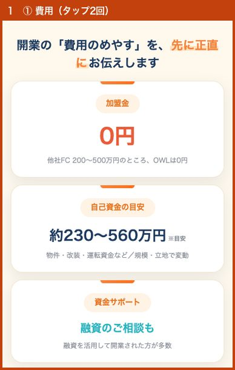
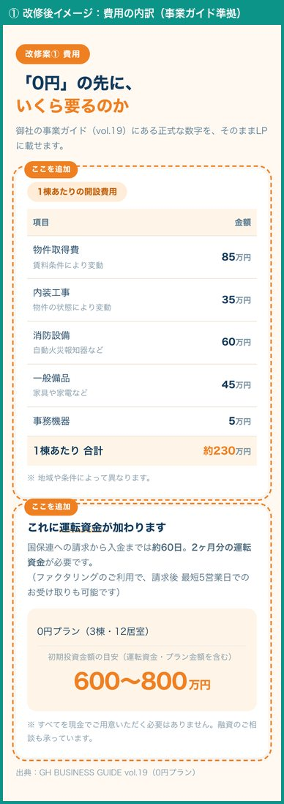
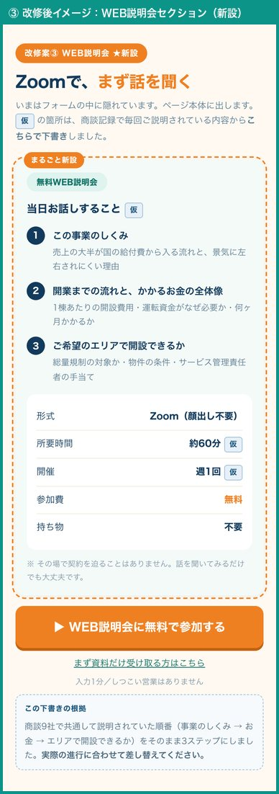
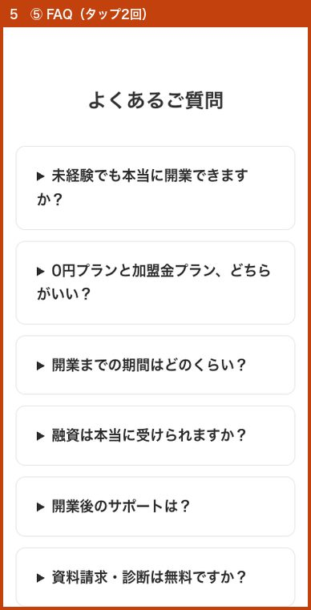
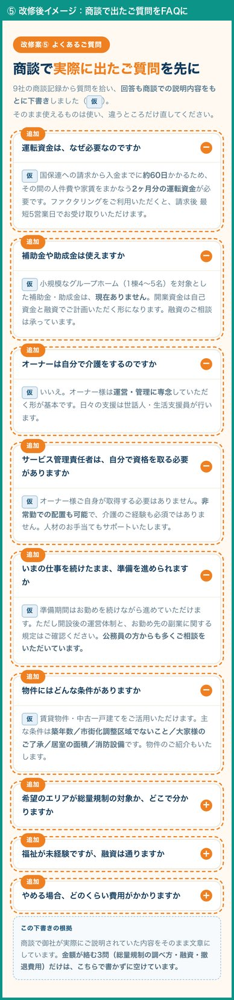

OWL｜ランディングページ改修のご提案
1
お客様が「押しても何も起きない場所」を押しています
一番押されているのは、収益シミュレーションの「人気プラン 12〜14居室 約1,200万円」のカードと、本文の画像そのものです。どちらもリンクではありません。「もっと詳しく知りたい」のサインと考えています。
2
WEB説明会は求められているのに、ページに説明がありません
お申し込みフォームの中に隠れている「希望日程」欄が全タップの17%。直近のお問い合わせも2件が説明会をご希望でした。何をする会なのかがページに書かれていません。
3
独立起業向けLPは、ボタンがほとんど押されていません
8/23は2本合わせて43回ご覧いただきましたが、お問い合わせボタンのタップは0回。一方で0円プランLPは同じ日にフォーム送信まで進んでいます。受け皿の差が出ています。
※ 追記（8/26）：その後8月26日に、独立起業向けLP（300万円版）から資料請求を1件いただきました。導線が使えないわけではなく、届いている数がまだ少ない状態です。停止ではなく改善の対象と考えています。
※ 追記（8/26）：その後8月26日に、独立起業向けLP（300万円版）から資料請求を1件いただきました。導線が使えないわけではなく、届いている数がまだ少ない状態です。停止ではなく改善の対象と考えています。
この資料の2つの印について
| 仮 | こちらで下書きしました。商談記録で御社が実際にご説明されていた内容をもとにしています。そのまま使えるものは使い、違うところだけ直してください。 |
| 要確定 | こちらでは書けない数字です。実績や収益の表示は景品表示法に関わるため、推測で埋めることはいたしません。御社に確定していただいてから入れます。 |
いま公開されている3本と、変更したい箇所

オレンジの枠が、今回ご提案する変更箇所です。番号は下の①〜⑤に対応しています。
商談記録から9社の商談を読み直して分かったこと
いただいた商談記録（9社10商談）と事業ガイド vol.19 を読み、LPで先に解消できることがないかを探しました。
9社のうち4社が、資金のところで止まっていました
「加盟金0円」でお問い合わせいただいた方が、商談の中で総額をお聞きになって温度が下がる、という同じ形が繰り返し出ています。
| いま LPに書かれている数字 | 事業ガイド vol.19 の数字 |
|---|---|
| 自己資金の目安 約230〜560万円 |
0円プラン（3棟・12居室）の 初期投資金額の目安 600〜800万円（運転資金・プラン金額を含む） |
230万円は「1棟あたりの開設費用（約230万円）」の数字と一致します。これが自己資金の目安として載っているため、実際に必要な額との差が生まれている可能性があります。
→ 改修案①で内訳と総額を先に出すことで、商談前に期待値を揃えられます。
→ 改修案①で内訳と総額を先に出すことで、商談前に期待値を揃えられます。
温度感の高い方には、共通点がありました
上位の方はいずれも福祉・医療の現役実務者、または当事者のご家族でした（看護師・特別支援学校の教員・サービス管理責任者の実務経験者・重度障害のお子さんをお持ちの方）。
→ LPの見せ方も、この層に向けて「実務経験をどう活かせるか」を厚くする余地があります。改修案⑤のご質問にも反映しました。
商談で繰り返し聞かれていたこと
これらはLPに先に書いておけるものです。改修案⑤のFAQに入れました。
| 運転資金はなぜ必要か | 国保連への請求から入金まで約60日 |
| 補助金・助成金は使えるか | 小規模GHは現在なし（商談で毎回訂正されている） |
| サビ管は自分で取る必要があるか | 非常勤で可・介護経験は不要 |
| 勤めたまま準備できるか | 副業規定を気にされる方が複数 |
| 物件の条件 | 築年数・市街化調整区域・大家様の許諾・居室面積・消防設備 |
| 総量規制の対象エリアか | エリアを変えて解決した例あり |
| 未経験でも融資は通るか | 未経験の方の共通の不安 |
| やめる場合の費用 | 原状回復の費用をお尋ねになった方あり |
1点、ご相談したいこと
商談では「棟数」（1棟目・2棟目…）で収益をご説明されていますが、現在のLPは「居室数」（8〜10居室・12〜14居室）で書かれています。事業ガイドも棟数表記です。LPを棟数に揃えるかどうかをご相談させてください。
触られている場所を「もっと詳しく」に変えます
新しい訴求を足すのではなく、すでにお客様が触れている場所を深掘りする方針です。写真はそのまま残し、見出し・本文・数字・表だけを文字にして、開いて読める形にします。右側は作りたいものの雰囲気で、デザインは現行LPのトーンに合わせます。
② 収益シミュレーションのカードを開けるようにする


- 各プランのカードを開けるようにします（いまは押しても何も起きません）
- 開くと出る中身は事業ガイド vol.19 の数字で書けます — 0円プラン（3棟12居室）年間売上予測 5,214万円／年間営業利益予測 989万円／投資回収期間 1年〜1年半／サポート費 月16.5万円（税込・2棟目以降 +5.5万円）
- 加えて入居率別の収支／人件費と人員配置／1棟目と2棟目で利益がどう変わるか — 項目立てと説明文は 仮 で下書き済み、入る金額だけ 要確定 です
- 満室前提の数字だけを見せない形にします（後の不信を防ぐため）
一番押されているのが「人気プラン 12〜14居室 約1,200万円」です。ここが最も知りたがられていると読めます。商談で「2年ぐらいで回収できると安心できる」とおっしゃった方がいました。回収期間はガイドに1年〜1年半と明記されているので、LPに出せます。
① 費用のセクションに「内訳」を足す


- 事業ガイド vol.19 の数字をそのまま載せます — 1棟あたりの開設費用 約230万円（物件取得費85万／内装工事35万／消防設備60万／一般備品45万／事務機器5万）
- そこに運転資金を足します。国保連への請求から入金まで約60日かかるため2ヶ月分が必要、という説明もあわせて書きます（ファクタリングで最短5営業日というご案内も）
- 最後に0円プランの初期投資金額の目安「600〜800万円」を提示します
- 「加盟金0円」「融資のご相談も」という今の見せ方はそのまま活かします
ご確認いただきたい点：自己資金の目安が、0円プランLPは「約230〜560万円」、独立起業向けLPは「300万円以上」、事業ガイドは「600〜800万円」と3つの数字があります。LPに載せる数字を1つに決めさせてください。
③ WEB説明会（Zoom）をページ本体に出す 新設


いま
お申し込みフォームを開く → 「WEB説明会」にチェックを入れる → そこで初めて希望日程が現れますページ本文に説明会の説明は一切ありません（「説明会」という言葉が、0円プランLPで2回、独立起業向けLPでは0回）
→
改修後
ページ本体に独立したセクションを新設当日お話しすること3点／形式（Zoom・顔出し不要）／所要時間／無料／定員／持ち物不要／「その場で契約を迫ることはありません」の一文
独立起業向けLPには説明会の入口自体がないため、そちらにも新設します。
「当日お話しすること」3点は 仮 で下書きしました（商談9社で共通して説明されていた順番 = 事業のしくみ → お金 → エリアで開設できるか）。所要時間・開催頻度も仮置きです。実際の進行に合わせて差し替えてください。
「当日お話しすること」3点は 仮 で下書きしました（商談9社で共通して説明されていた順番 = 事業のしくみ → お金 → エリアで開設できるか）。所要時間・開催頻度も仮置きです。実際の進行に合わせて差し替えてください。
④ 画像に焼き込まれた文字を、そのまま読める文字にする


いま
見出しも本文も数字も表も、すべて画像の中に描かれています→ 拡大しないと読みにくい
→ 文言を直すたびに画像の作り直しが必要
→ 検索エンジンにも中身が伝わらない
→
改修後
写真はそのまま画像で残します→ そのまま読める
→ 文字だけ後から差し替えられる
→ 検索エンジンにも伝わる
押せない画像を押しているのは、拡大して読もうとしている動きだと考えています。デザインの見た目は変えず、文字の持ち方だけを変える改修です。
⑤ よくあるご質問を増やす（独立起業向けLP）


数少ない接触の3分の1がご質問欄です。「まだ疑問が残っている」サインと見ています。
追加する9問は商談記録で実際に聞かれていたものから選び、回答も6問ぶん 仮 で下書きしました（商談での御社のご説明をそのまま文章にしています）。
金額が絡む3問（総量規制の調べ方・融資・撤退費用）だけは、こちらで書かずに空けてあります。
商談で毎回ご説明されていることをLPに先に出しておけば、商談の時間を前向きな話に使えます。
追加する9問は商談記録で実際に聞かれていたものから選び、回答も6問ぶん 仮 で下書きしました（商談での御社のご説明をそのまま文章にしています）。
金額が絡む3問（総量規制の調べ方・融資・撤退費用）だけは、こちらで書かずに空けてあります。
商談で毎回ご説明されていることをLPに先に出しておけば、商談の時間を前向きな話に使えます。
8月25日・26日の実測で、ご提案の優先順位がはっきりしました
8月24日にこのご提案を作成したあと、あらためて実測しました。ご提案の内容は変えません。どれから着手すべきかが、より明確になりました。
1. ご提案②（収益シミュレーション）が、最優先で間違いありません
| 押されていた場所（8/25・スマートフォン・全16回） | 回数 |
|---|---|
| 収益シミュレーションの利益額の数字そのもの | 4回 |
| 本文の画像（リンクではありません） | 4回 |
| 収益シミュレーションのアイコン・カード | 5回 |
| お問い合わせボタン | 1回 |
- 収益シミュレーション関連だけで9回（56%）。8月23日の17%から大きく増えました
- 最も押されていたのは「月間営業利益 約○○万円」の数字そのものです。「押したら内訳が見られる」と思って押されています。いまは押しても何も起きません
- ご提案②「カードを開けるようにする」が、そのままこの動きに応える形になります
2. ページの下まで読まれる割合が、3分の1に減っています
| 日 | ご覧になった方 | 半分まで | 最後まで |
|---|---|---|---|
| 8/17-18 | 37人 | 70% | 32%（12人） |
| 8/21 | 33人 | 70% | 18%（6人） |
| 8/22 | 37人 | 54% | 16%（6人） |
| 8/25 | 38人 | 58% | 11%（4人） |
- ご覧になる方の数は37人前後で変わっていません。減っているのは「下まで読む方」だけです
- お申し込みフォームはページの下にあります。下まで行く方が3分の1になると、お問い合わせは出にくくなります
- これはご提案④（画像に焼いた文字を読める文字にする）が効く部分です。読むのに拡大が必要な状態が、離脱につながっていると考えています
3. スマートフォンで表示に10秒かかっています
- 主要な画像が表示されるまで10.0秒（良好とされる基準は2.5秒）
- ページ全体で6.19MB。うち計測タグのプログラムだけで1.26MB（全体の2割）を占めていました
- 使われていない古いアクセス解析のタグが1本残っており、これを止めるだけで0.56MB減ります。こちらで対応可能です
- ご提案④で画像を文字に置き換えると、この重さも同時に軽くなります
2.5秒まで縮めるにはWordPressのテーマ側の見直しが必要で、今回のご提案の範囲を超えます。まずは無理なく減らせるところから進めます。
4. ページの名前（検索結果に出るタイトル）を直しました 対応済み
- 3本とも「2026年6月」「2026年7月 資料請求」という社内向けの名前が、そのまま検索結果に出ていました
- 0円プランLP →「障がい者グループホーム開業・経営｜加盟金0円 - OWL福祉事業」
- 独立起業向けLP →「福祉事業で独立・起業｜グループホーム開業 - OWL福祉事業」
- ページのアドレスと本文は変更していません（変更前後で本文が完全に一致することを確認済みです）
数字が決まるまで、LPには出しません
| ご確認したいこと | 現状 |
|---|---|
| WEB説明会の当日の内容・所要時間・開催頻度 | 仮 で下書き済み。これで合っているかだけご確認ください |
| 自己資金の目安（LPに載せる数字を1つに） | 0円プランLP「約230〜560万円」／独立起業向けLP「300万円以上」／事業ガイド「600〜800万円」の3つ |
| 未経験の比率 | LP上部のバッジは「95%」、同じ独立起業向けLPの下部は「85%」、FAQは「約6割」と3つ。事業ガイドには記載が見当たりません |
| 開設実績の件数 | 「400件」「180社」「4社」の3種類。独立起業向けLPでは、上部のバッジが「400件」・下部のセクションが「180社」と同じページ内で異なります |
| 給付費が売上に占める割合 | 0円プランLPは「9割」、独立起業向けLPは「85%」、事業ガイドは「大半」と表現が分かれています |
| 収益の見せ方を棟数に揃えるか | 商談とガイドは棟数、LPは居室数 |
| FAQ9問の回答内容 | 質問は商談記録から抽出済み。6問は 仮 で回答も下書き済み／残り3問（総量規制の調べ方・融資・撤退費用）は空欄 |
| 入居率別の収支・人件費・1〜3棟目の月次利益 | 項目立ては 仮 で用意済み。入る金額のみ 要確定 |
ご確認を待たずに進めたもの：上の 仮 は、商談記録をもとにこちらで下書きしました。ゼロから考えていただく必要はありません。
解決したもの：初期費用の内訳は、事業ガイド vol.19 に「1棟あたり約230万円（物件取得費85万／内装工事35万／消防設備60万／一般備品45万／事務機器5万）」の記載があったため、そのまま使えます。
解決したもの：初期費用の内訳は、事業ガイド vol.19 に「1棟あたり約230万円（物件取得費85万／内装工事35万／消防設備60万／一般備品45万／事務機器5万）」の記載があったため、そのまま使えます。
実績や収益の表示は景品表示法に関わります。こちらの推測で数字を埋めることはいたしません。決まるまでは現在の表記のままにします。
こちらで進めるもの／ご確認をお願いするもの
④ は、こちらで進めます（ご確認は不要です）
④はいま画像に描かれている文言を、そのまま文字にするだけです。新しい主張を足すものではないので、ご確認をお待ちする必要がないと考えています。
画像の説明文（alt）を埋める — 現在9枚が空欄。文面はこちらで用意済みです
タップされている画像から順に、見出し・本文・数字をテキストにしていく
※ 見た目は変わりません。写真もそのまま残します。数字もいま書かれているものをそのまま移すだけで、変更はしません。
※ 「400件」「95%」など社内で割れている数字は、確定してから画像とあわせて直します。それまではいまの表記のまま移します。
※ 「400件」「95%」など社内で割れている数字は、確定してから画像とあわせて直します。それまではいまの表記のまま移します。
ご確認をいただいてから着手します
③ WEB説明会セクションの新設 — 当日の内容は 仮 で下書き済み。合っているかだけご確認ください
② 収益シミュレーションの中身・① 費用の内訳 — 事業ガイドの数字は反映済み。入居率別の収支・人件費・棟ごとの利益だけ 要確定
⑤ よくあるご質問の追加 — 6問は 仮 で回答も下書き済み。残り3問（総量規制の調べ方・融資・撤退費用）のご確認
数字の統一 — 自己資金／未経験率／開設実績を、それぞれ1つに決めていただきたい
現在のWordPressのまま実装できます
・テーマの変更・プラグインの追加は不要です
・お申し込みフォームには一切手を触れません。既存の「WEB説明会」チェックボックスをそのまま使い、ページ側に入口を足すだけです
・通知先のメールアドレスにも影響ありません
・画像を文字に置き換える分、ページはむしろ軽くなります
・お申し込みフォームには一切手を触れません。既存の「WEB説明会」チェックボックスをそのまま使い、ページ側に入口を足すだけです
・通知先のメールアドレスにも影響ありません
・画像を文字に置き換える分、ページはむしろ軽くなります